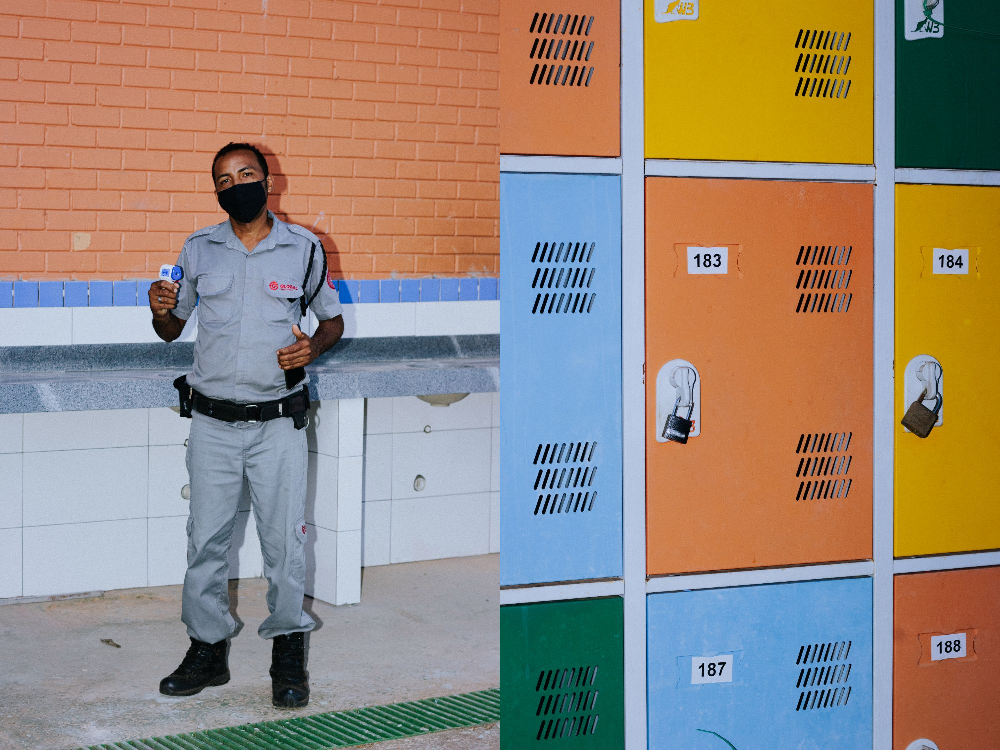
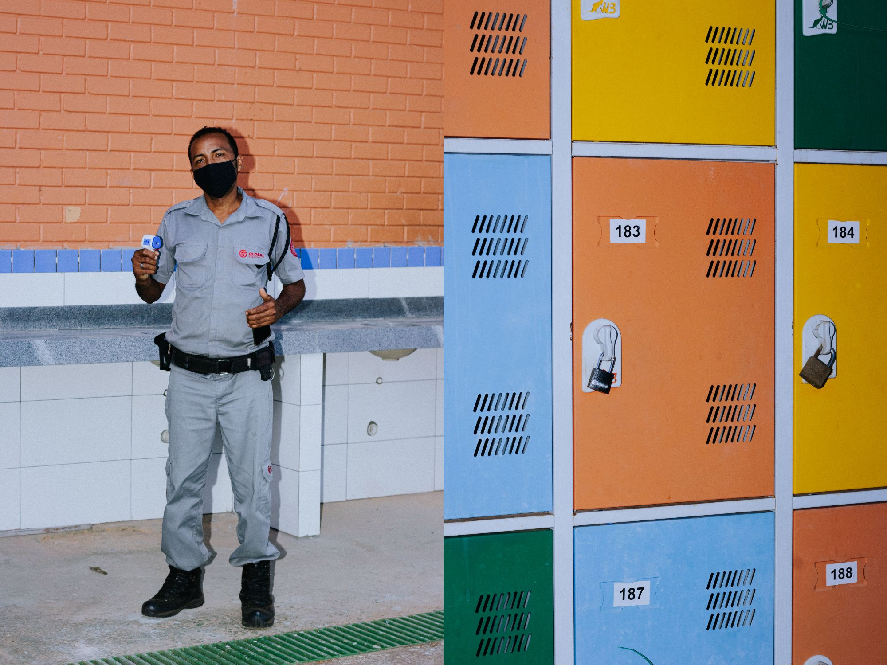
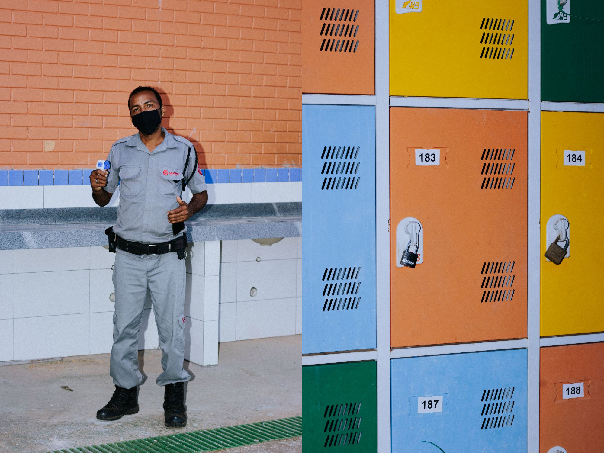
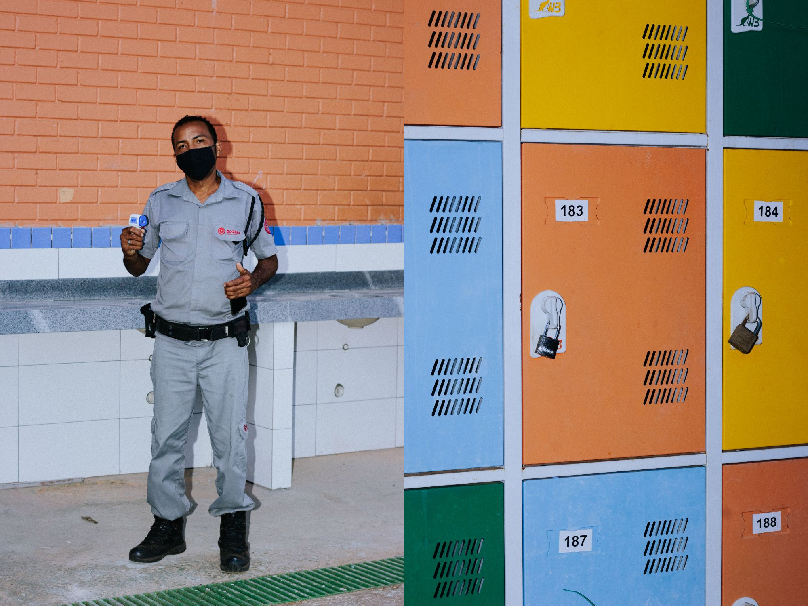
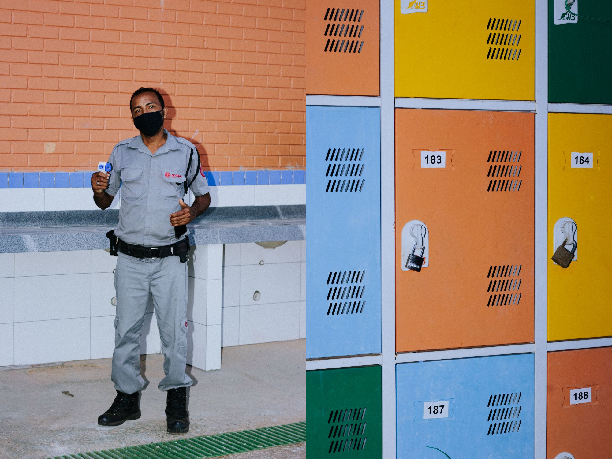

jose
lucas
estudante pesquisando os efeitos do coronavirus na educação pública
linktr.ee
contato
instagram
sobre
escola_em_casa
sentimentos presenciais
publicações
exposições
mapa do corpo
serrinha raiz das águas
foto-presente
diario visual
festivais
espetaculos
shows
retratos
o ultimo boteco
7 manhãs
area de militar
muralll da escolaaaaaaa

© 2022 josé lucas
 



 
